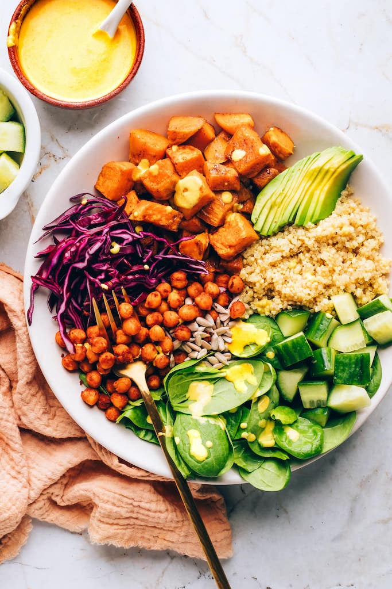

Buddha Bowl

Description
Semper feugiat nibh sed pulvinar proin. Sed ullamcorper morbi tincidunt
ornare massa eget egestas. Scelerisque varius morbi enim nunc faucibus a
pellentesque sit. Quam elementum pulvinar etiam non quam lacus suspendisse
faucibus interdum. Risus in hendrerit gravida rutrum quisque. Non sodales neque
sodales ut etiam sit amet nisl purus. Egestas sed tempus urna et pharetra.
Luctus accumsan tortor posuere ac. Et netus et malesuada fames ac. Rutrum tellus pellentesque
eu tincidunt. Sagittis id consectetur purus ut faucibus pulvinar elementum. Hendrerit
gravida rutrum quisque non. Ornare arcu dui vivamus arcu felis bibendum ut tristique. Amet nulla
facilisi morbi tempus iaculis urna id.
Ingredients
Bowl:
- 2/3 cup dry quinoa
- 1 1/3 cup vegetable broth
- 4 cups baby spinach, loosely packed
- 1 cup cucumber, chopped
- 1 cup purple cabbage, choped
- 1/4 cup roasted sunflower seeds
- Garlic tahini dressing
- Avocado slices, for serving
Sweet Potatoes:
- 2 medium sweet potatoes, peeled or unpeeled
- 1-2 Tablespoons avocado or olive oil
- 1/2 teaspoon sea salt
- 1/4 teaspoon ground pepper
Chickpeas
- 1 15 oz can chickpeas, drained and rinsed
- 1-2 teaspoons olive oil
- 1 teaspoon chili powder
- 1/2 teaspoon garlic powder
- 1/2 teaspoon onion powder
- 1/4 teaspoon salt
- 1/8 teaspoon pepper
Instructions
- Preheat oven to 400F and line a baking sheet with parchment paper.
- Chop sweet potatoes into 1/2-inch chunks. Try tomake them around the same
size so that they are all done cooking at the same time. Place sweet potatos,
oil, salt and pepper in a large bowl and toss to combine. Pour sweet potatoes
onto parchment lined baking sheet (save some room for the chickpeas).
- Add the chickpeas to a mixing bowl with oil and seasonings. Use your hands to
coat the chickpeas well. Pour the chickpeas onto a baking sheet, separate from the
sweet potatoes
- Bake for 30-35 minutes, tossing once half way through, until sweet potatoes are
soft. Remove from oven, taste and season with additional salt if needed.
- While sweet potatoes and chickpeas are roasting, rinse and drain quinoa, if
needed. Add quinoa and broth to a saucepan and bring to a boil. Reduce to a
simmer, cover and cook for 15 minutes .Fluff with a fork and let cool for 5-10
minutes.
- Meanwhile make the dressing and set aside
- To make the bowls, add 1/2 cup quinoa, 1 cup spinach, 1/2 cup sweet potatoes, 1/3
cup chickpeas, 1/4 cup cucumber, 1/4 cup cabbage, and 1 Tablespoon sunflower
seeds to 4 bowls. Drizzle 2 Tablespoons of dressing and top with slice avocado,
if desired.
- Serve immediately